《Spring in Action》读书笔记和总结。Spring官网: spring.io
Spring的底层功能依赖于两个核心特性，依赖注入(dependency injection, DI)和面向切面编程(aspect-oriented programming, AOP)。Spring简化了Java开发，提供了轻量级的编程模型，增强了POJO(plain old Java object)的功能。DI和AOP都是为了实现接口和功能的松耦合(Loose Coupling)，并且在实现上最大化的采用最小侵入性编程。
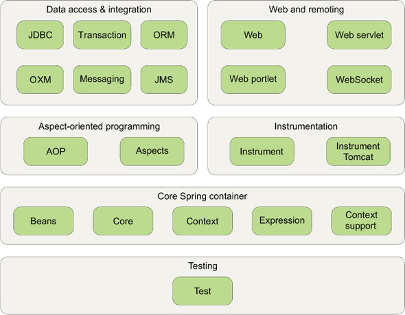
DI
实现接口上的松耦合。为了关联各接口之间的调用和依赖，Spring采用装配bean方式。建立应用接口间依赖关系的行为称为装配(Wiring)。
Spring应用上下文(Application Context)负责对象的创建和组装。
Spring提供三种主要的装配注入机制:
- 隐式的bean自动装配机制；
- 显示Java配置；
- 显示XML配置。
自动化装配bean
先定义需要的组件component，其次开启组件扫描(Component scanning)，最后调用其他组件。Spring会自动发现应用上下文中创建的bean。
定义组件
1 | @Component("beanName") //beanName不填写，默认为首字母小写的类名 |
开启组件扫描
1 |
|
默认以配置类所在的包作为基础包(base package)扫描组件。@ComponentScan(basePackages="pkgName")一个包、@ComponentScan(basePackages={"pkgName1", "pkgName2"})多个包、@ComponentScan(basePackageClasses={Interface1.class, Impl2.class})类或接口所在的包作为组件扫描的基础包。1
<context:component-scan base-package="pkg" />
调用其他组件
1 | @Component |
Java Config
添加配置并声明各接口调用依赖关系即可。1
2
3
4
5
6
7
8
9
10
11
12
13
14@Configuration
public class EatConfig {
@Bean
public Fruit fruit() {
return new Apple(System.out);
}
@Bean
public Person person() {
return new Man(fruit());
}
}
XML Config
构造器注入
可以使用全称<constructor-arg />或c-标签1
2
3
4
5
6
7
8
9
10
11
12
13
14
15
16
17
18
19
20
21
22
23
24
25
26
27<bean id="person" class="eat.Person">
<constructor-arg ref="fruit" /> <!-- bean引用注入 -->
</bean>
<bean id="fruit" class="eat.Fruit">
<constructor-arg value="#{T(System).out}" /> <!-- 字面量注入 -->
</bean>
<bean id="list" class="eat.Collection">
<constructor-arg>
<list> <!-- 集合注入 -->
<ref bean="one" />
<ref bean="two" />
<ref bean="three" />
</list>
</constructor-arg>
</bean>
<bean id="list" class="eat.Collection">
<constructor-arg>
<list> <!-- 集合注入 -->
<value>one</value>
<value>two</value>
<value>three</value>
</list>
</constructor-arg>
</bean>
作为一个通用规则，对强依赖使用构造器注入，对弱依赖使用属性注入。
属性注入
1 | <bean id="person" class="eat.Person"> |
导入和混合配置
Java Config
1 | @Configuration |
XML Config
1 | <bean class="package.OneConfig" /> |
高级装配
Profile
应用程序在不同环境的迁移，如数据库配置、加密算法以及与外部系统集成是否Mock是跨环境部署时会发生变化的几个典型例子。
如果在XML配置文件中配置(Maven的profiles)，在构建阶段确定将配置编译部署，问题在于为每种环境重新构建应用，而Spring的profile是在运行时确定配置源。
定义profile
1 | @Configuration |
1 | <beans profile="dev"> |
激活profile
有多种方式设置这两个属性，spring.profiles.active优先spring.profiles.default。
- As initialization parameters on DispatcherServlet
- As context parameters of a web application
- As JNDI entries
- As environment variables
- As JVM system properties
- Using the @ActiveProfiles annotation on an integration test class
例如在Web应用中，设置spring.profiles.default的web.xml文件1
2
3
4
5
6
7
8
9
10
11
12
13
14
15
16
17
18
19<web-app ...>
<!-- 为上下文设置默认的profile -->
<context-param>
<param-name>spring.profiles.default</param-name>
<param-value>dev</param-value>
</context-param>
<!-- 为Servlet设置默认的profile -->
<servlet>
<servlet-name>appServlet</servlet-name>
<servlet-class>
org.springframework.web.servlet.DispatcherServlet
</servlet-class>
<init-param>
<param-name>spring.profiles.default</param-name>
<param-value>dev</param-value>
</init-param>
<load-on-startup>1</load-on-startup>
</servlet>
</web-app>
Conditional beans
如果希望某个特定的bean创建后或环境变量设置后才会创建这个bean。Spring4引入了@Conditional注解。1
2
3
4
5
6
7
8
9
10@Configuration
public class MagicConfig {
@Bean
@Conditional(MagicExistsCondition.class)
public MagicBean magicBean() {
return new MagicBean();
}
}
设置给@Conditional的类需实现Condition接口，它会通过该接口进行对比。1
2
3public interface Condition {
boolean matches(ConditionContext context, AnnotatedTypeMetadata metadata);
}
matches()返回true，会创建带有@Conditional注解的类。否则反之。
PS: @Profile本身也使用了@Conditional注解，并引用ProfileCondition作为Condition实现。可查看Spring4以上源码。
处理自动装配歧义性
场景: 一个接口多个实现。
定义限定符
1
2
3
4
5@Component //也可以是所有使用了@Component的注解，如: @Service、@Controller、@Ropository等
@Qualifier("one") //该注解可省略，默认bean ID为首字母为小写的实现类名字。
public class One implements Number {
...
}使用限定符。
@Qualifier搭配@Autowired，@Autowired默认按类型装配1
2
3@Autowired
@Qualifier("one")
private Number num;
或者直接使用J2EE自带的@Resource，默认按名称进行装配，减少了与spring的耦合(推荐)。1
2@Resource(name = "one")
private Number num;
bean的作用域
默认情况下，Spring Application Context中所有bean都是以单例(singleton)创建的。也就是说，不管特定的bean被注入到其他bean多少次，每次注入的都是同一个实例。大多数情况下，单例bean是很理想的状态。但有时候所用类是mutable，重用是不安全的。
Spring定义了四种作用域:
- 单例(singleton)：在整个应用中，只创建bean的一个实例。
- 原型(Prototype)：每次注入或通过Spring应用上下文获取的时候，都会创建一个新的bean实例。
- 会话(Session)：在Web应用中，为每个会话创建一个bean实例。
- 请求(Request)：在Web应用中，为每次请求创建一个bean实例。
声明bean为原型作用域
JavaConfig@Scope(ConfigurableBeanFactory.SCOPE_PROTOTYPE);XMLConfigscope="prototype"。
声明bean为会话和请求作用域
在Web应用中，以购物车bean为例，单例和原型作用域就不适用，会话作用域是最合适的，因为它与特定用户关联性最大。1
2
3
4
5@Component
@Scope(
value=WebApplicationContext.SCOPE_SESSION,
proxyMode=ScopedProxyMode.INTERFACES)
public ShoppingCart cart() { ... }
在每个用户购物完成后会调用保存订单service，也就是会将会话级别的 ShoppingCart bean注入到单例级别的 StoreService bean中。proxyMode属性解决了将会话或请求作用域的bean注入到单例bean的问题。
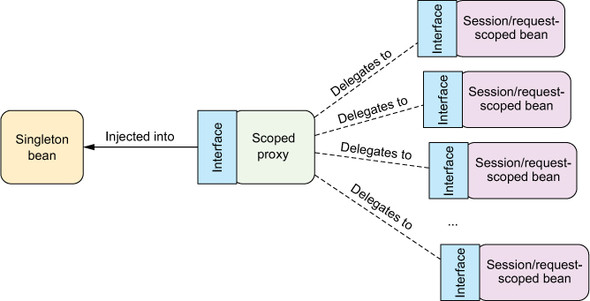
基于接口代理：proxyMode=ScopedProxyMode.INTERFACES or <aop:scoped-proxy proxy-target-class="false" />
基于实现类代理：proxyMode=ScopedProxyMode.TARGET_CLASS or <aop:scoped-proxy />
运行时值注入
避免将值硬编码在配置类中，使其在运行时确定。
声明属性源并通过Spring的Environment来检索属性
1 | @Configuration |
属性占位符(Property placeholders)
为了使用占位符，需要配置一个 PropertySourcesPlaceholderConfigurer bean，它能够基于Spring Environment及其属性源来解析占位符。1
2
3
4@Bean
public static PropertySourcesPlaceholderConfigurer placeholderConfigurer() {
return new PropertySourcesPlaceholderConfigurer();
}
1 | <beans> |
使用解析参数:1
2
3
4
5
6public BlankDisc(
@Value("${disc.title}") String title,
@Value("${disc.artist}") String artist) {
this.title = title;
this.artist = artist;
}
Spring表达式语言(The Spring Expression Language, SpEL)
SpEL表达式要放在”#{ … }”之中。
- 引用bean、属性和方法。例如：
#{sgtPeppers}、#{sgtPeppers.artist}、#{artistSelector.selectArtist()}、#{artistSelector.selectArtist().toUpperCase()} - 访问Java类。’T()’运算符结果是一个class对象，能够访问目标类型的静态方法和常量。
#{T(System).currentTimeMillis()}、T(java.lang.Math).PI、T(java.lang.Math).random() - 对值进行算术、关系和逻辑运算。
#{T(java.lang.Math).PI * circle.radius ^ 2}、#{disc.title + ' by ' + disc.artist}、#{scoreboard.score > 1000 ? "Winner!" : "Loser"} - 匹配正则表达式(Regular Expression, regex)。
matches运算符对String类型的文本(左边参数)应用正则(右边参数)。#{admin.email matches '[a-zA-Z0-9._%+-]+@[a-zA-Z0-9.-]+\\.com'} - 计算集合。
#{jukebox.songs[4].title}；查询运算符”.?[]”用来对集合进行过滤得到集合子集，#{jukebox.songs.?[artist eq 'Aerosmith']}；查询第一个匹配项”.^[]”和查询最后一个匹配项”.$[]”；投影运算符”.![]”，如将title属性投影到一个新的String类型集合中#{jukebox.songs.![title]}
PS: 尽可能让表达式保持简洁，不要让表达式太智能复杂。
AOP
实现功能上的松耦合。把系统核心业务逻辑组件和额外功能如日志、事务管理和安全这样的服务组件分离开来。1
2
3
4
5
6
7
8
9
10
11
12<aop:config>
<aop:aspect ref="asp">
<aop:pointcut id="pc"
expression="execution(* *.method(..))"/>
<aop:before pointcut-ref="pc"
method="doBeforePc"/>
<aop:after pointcut-ref="pc"
method="doAfterPc"/>
</aop:aspect>
</aop:config>
Spring容器(container)负责创建、装配、配置并管理对象的整个生命周期，从生存到死亡。Spring容器分为两种类型: BeanFactory(bean工厂)是最简单的容器，提供基本的DI支持；Application Context(应用上下文)基于BeanFactory构建，提供应用框架级别的服务。(推荐使用)
通知(Advice)
通知定义了切面是什么以及何时使用。Spring切面可以应用5种类型的通知，并使用AspectJ注解来声明通知方法:
- 前置通知-
@Before: The advice functionality takes place before the advised method is invoked. - 后置通知-
@After: The advice functionality takes place after the advised method completes, regardless of the outcome. - 返回通知-
@AfterReturning: The advice functionality takes place after the advised method successfully completes. - 异常通知-
@AfterThrowing: The advice functionality takes place after the advised method throws an exception. - 环绕通知-
@Around: The advice wraps the advised method, providing some functionality before and after the advised method is invoked.
切点(Pointcut)
切点定义在何处执行动作。Spring AOP所支持的AspectJ切点指示器: args()、@args()、execution()、this()、target()、@target()、within()、@within()、@annotation。只有execution指示器是实际执行匹配的，其他都是用来限制匹配的，所以execution指示器是编写切点定义时最主要的指示器。
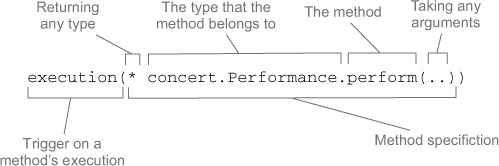
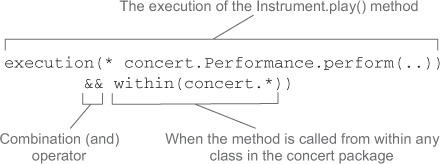bean()指示器使用bean ID或name作为参数来限制切点只匹配特定的bean。execution(* concert.Performance.perform()) and bean('woodstock')。
基本流程
- 定义切面
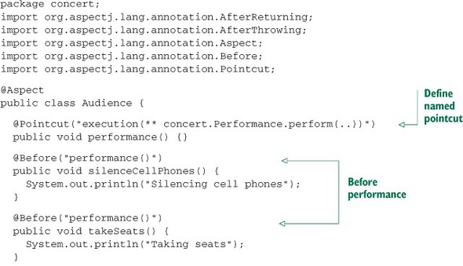
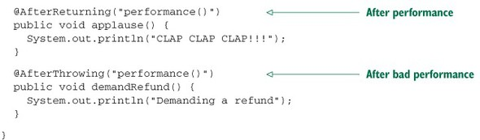
XML Config:
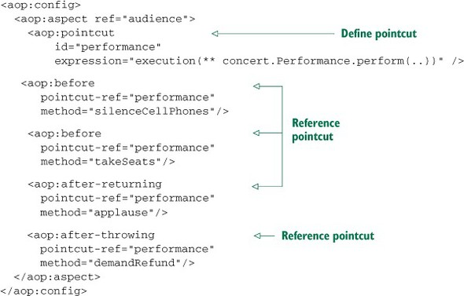 - 启用AspectJ注解的自动代理
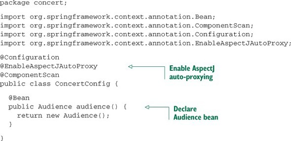
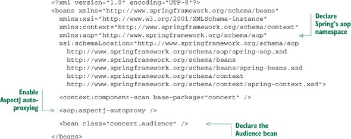
创建环绕通知
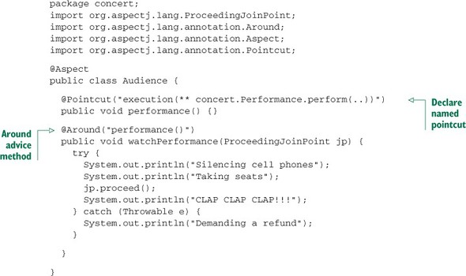
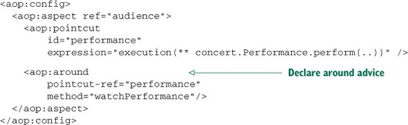
通知中增加参数
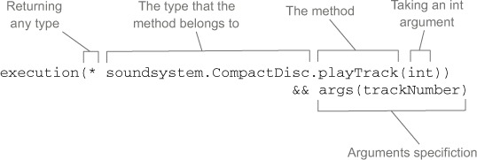
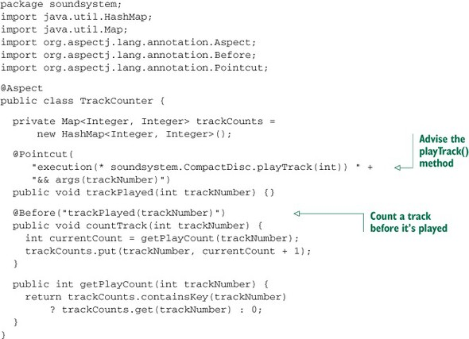
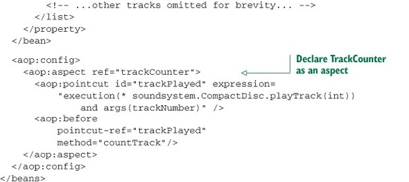
切点表达式中的args(trackNumber)限定符表明传递给 playTrack() 方法的int类型参数也会传递到通知中去，参数的名称trackNumber也与切点方法签名中的参数相匹配，这样就完成了从命名切点到通知方法的参数转移。
通过注解引入新功能
不用直接修改对象或类的定义就能够为对象或类增加新的方法。一种情况是设计上在原接口上增加通用方法对所有的实现并不适用，一种情况是使用第三方实现没有源码的时候。借助于AOP的引入功能，不必在设计上妥协或者侵入性地改变现有的实现。
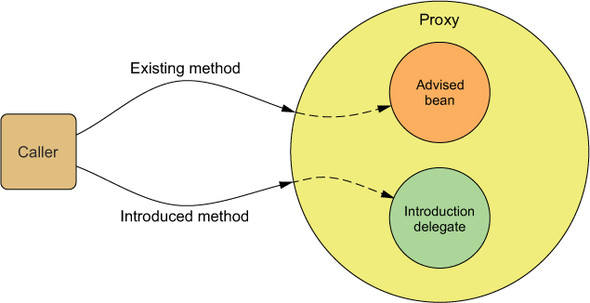1
2
3
4
5
6
7
8
public class EncoreableIntroducer {
(value="concert.Performance+",
defaultImpl=DefaultEncoreable.class)
public static Encoreable encoreable;
}
1 | <aop:aspect> |
通过@DeclareParents注解将新接口引入到现有的bean中。value属性指定引入到哪个接口bean上，加号’+’表示该对象的子类型，而不是其本身；defaultImpl属性指定了引入的功能；